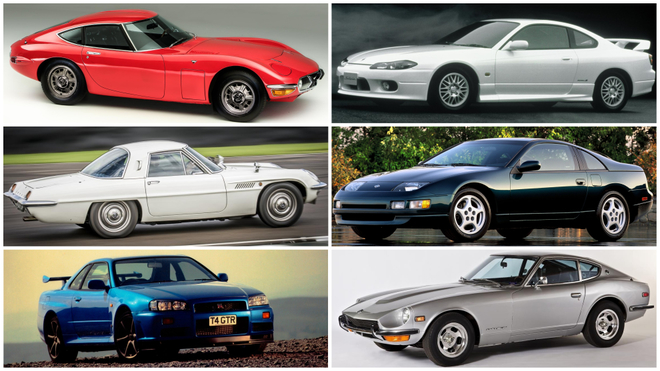
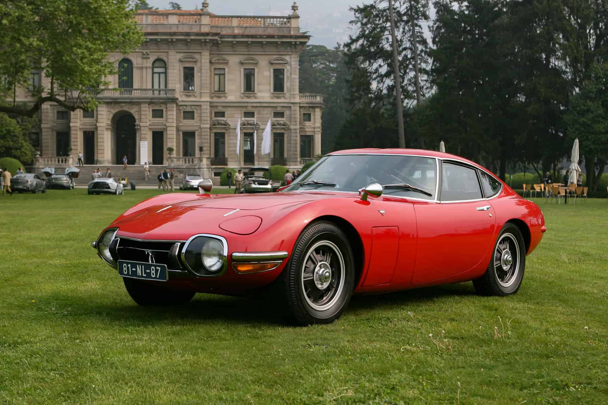
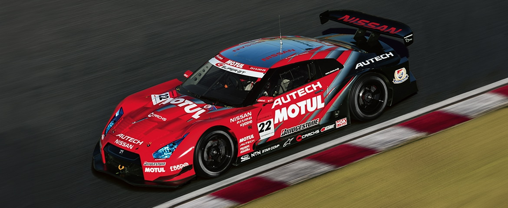
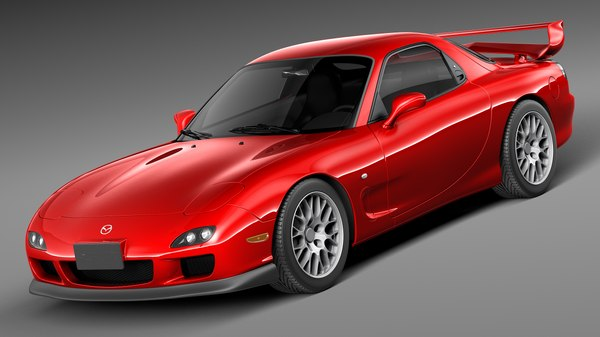

Los autos deportivos japoneses han capturado la atención del mundo por su combinación de ingeniería de vanguardia, diseño audaz y rendimiento excepcional.
Entre las marcas más destacadas se encuentran Nissan, Toyota, Mazda, Honda y Subaru. Estos fabricantes han creado vehículos icónicos que han dejado una huella imborrable en la industria automotriz.

Historia
La historia de los autos deportivos japoneses se remonta a las décadas de 1960 y 1970, cuando fabricantes como Nissan, Toyota y Honda comenzaron a desarrollar vehículos que no solo eran funcionales sino también emocionantes de conducir.
"Los modelos como el Toyota 2000GT y el Datsun 240Z revolucionaron la industria automotriz, poniendo a Japón en el mapa de los autos deportivos."
Los autos deportivos japoneses fueron influenciados por la industria estadounidense y europea, pero desarrollaron un estilo y tecnología propios que les permitieron destacarse.

1967: Lanzamiento del Toyota 2000GT
1969: Debut del Nissan Fairlady Z (Datsun 240Z)
1978: Introducción del Mazda RX-7
Modelos Icónicos
Nissan GT-R
Conocido como el "Godzilla" de los autos deportivos, el GT-R es famoso por su tracción integral y potencia inigualable.

Nissan GT-R en una carrera de alta velocidad.
Toyota Supra
El Supra es un símbolo de velocidad y cultura pop, popularizado por su presencia en películas y su rendimiento en carreras.
El Supra es reconocido por su motor 2JZ, famoso por su capacidad de modulación y resistencia.
Motor: 3.0L Turbo
Tracción trasera
Potencia: 335 HP
Mazda RX-7
Equipado con un motor rotativo único, el RX-7 es admirado por su ligereza y capacidad de respuesta.
"El RX-7 es un ejemplo de cómo un diseño compacto puede ofrecer una experiencia de conducción emocionante."
Primera generación (1978-1985)
Segunda generación (1986-1992)
Tercera generación (1992-2002)

Innovación y Tecnología
Los fabricantes japoneses han sido pioneros en la incorporación de tecnologías avanzadas como sistemas de control de tracción, turboalimentadores y materiales livianos. Estos avances han mejorado la eficiencia y el rendimiento de sus vehículos.
Aspectos destacados de la innovación:
Tecnologías Clave en Autos Deportivos Japoneses
Tecnología
Descripción
Control de tracción
Sistemas electrónicos que mejoran la estabilidad y manejo.
Turboalimentadores
Aumentan la potencia del motor al comprimir el aire de admisión.
Materiales compuestos
Reducen el peso total del vehículo sin comprometer la resistencia.
Fuente: Innovaciones de la industria automotriz japonesa.
Curiosidades
Los autos deportivos japoneses no solo destacan por su rendimiento, sino también por su aparición en la cultura popular.
El Nissan Skyline GT-R fue popularizado por la saga de películas "Rápidos y Furiosos".
El Mazda RX-7 es conocido por su distintivo motor rotativo.
El Honda NSX fue desarrollado con la ayuda del legendario piloto Ayrton Senna.